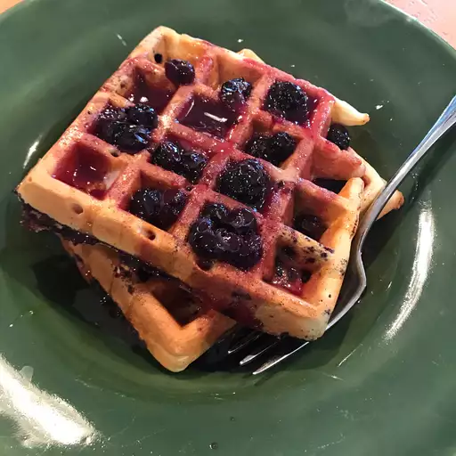

Blueberry Waffles

Description
Love waffles? Why not add blueberries to the mix too!
Ingredients
Waffles:
- ⅔ cups milk
- 3 large eggs, separated, divided
- 2 cups all-purpose flour
- ¼ teaspoons baking powder
- ½ teaspoon salt
- ¼ cup unsalted butter, melted
- 2/3 cup blueberries
Sauce:
- 1 1/2 cups blueberries
- 3 tbsp honey
- 1/2 cup orange juice, divided
- 1 tbsp cornstarch
Directions
- Make the waffles: In a medium bowl, whisk together milk and egg yolks. Stir in flour, baking powder, and salt.
Stir in melted butter and let stand for about 30 minutes.
- Lightly grease and preheat a waffle iron according to the manufacturer's instructions.
- Beat egg whites in a glass, metal, or ceramic bowl until stiff. Fold into batter with blueberries.
- Working in batches, scoop portions of the batter onto the preheated waffle iron.
Cook each waffle until golden brown and the iron stops steaming, 4 to 6 minutes.
- Meanwhile, make the sauce: Stir blueberries, 1/4 cup orange juice, and honey together in a medium saucepan over medium heat.
Bring to a boil.
- Mix remaining 1/4 cup orange juice and cornstarch together in a small bowl; stir into the blueberry mixture.
Cook, stirring constantly, until thickened. Serve warm over waffles.